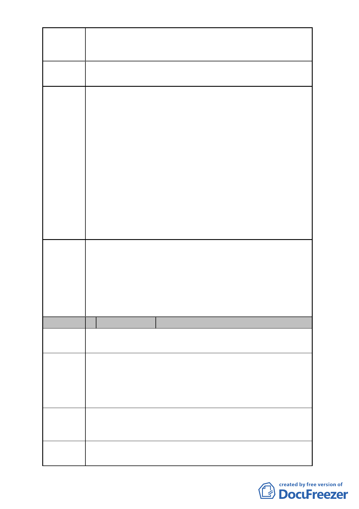

案名
建議辦法
變更臺北市士林區菁山段一小段 45 地號等 90 筆土
地及北投區大屯段二小段 111-2 地號等 5 筆土地共五處陽明
山國家公園區為保護區主要計畫案
將上開 5 筆土地均列為保護區
市府回應
說明
委員會
決議
編號
1、陳情地點係位於本案變更位置編號 3 範圍內。該變更範圍
係陽明山國家公園管理處於辦理「陽明山國家公園計畫
（第三次通盤檢討）」時由本府工務局大地工程處以 101
年 11 月 7 日北市工地道字第 10132467000 號函請內政部
國家公園計畫委員會納入該通盤檢討案之人民、機關、團
體陳情意見，表示因未來將新闢產業道路，建議劃出於國
家公園範圍。
2、案經內政部國家公園計畫委員會決議予以採納，依本府工
務局大地工程處所提方案，將新闢產業道路路段約 0.31
公頃，劃出國家公園範圍，納入臺北市都市土地。
3、本案劃出陽明山國家公園計畫範圍已由內政部 102 年 7
月 4 日台內營字第 1020241926 號公告「陽明山國家公園
計畫（第三次通盤檢討）」變更調整，故本案維持原變更
範圍。
本案係市府配合內政部 102 年 7 月 4 日台內營字第
1020241926 號公告之「陽明山國家公園計畫（第三次通盤檢
討）」案，將劃出國家公園計畫範圍之土地，變更回復為保護
區。因此，有關公民或團體建議將所持有土地劃出國家公園
計畫範圍之陳情意見，非本會審議範疇。惟為兼顧土地使用
權益，請市府大地工程處就公民或團體陳情地點擬興闢之產
業道路位置，再與陳情人協商。
2 陳情人
鄭翔徽
陳情地點 士林區溪山段二小段 595
陳情理由
建議辦法
市府回應
說明
本市大地工程處已計畫於民國 103 年發包開闢本 595 地
號南側之產業道路在案。
本地號土地經此次變更後，將分屬二不同行政機關管
轄，且其屬台北市政府管轄部分之土地面積狹小不能使用，
影響土地所有權人之權益至巨。
建議將本地號土地全部劃為台北市的保護區，使其管轄
權歸屬單一行政機關，以保障人民未來開發使用該土地之權
益並減化行政作業之程序。
本案劃出陽明山國家公園計畫範圍已由內政部 102 年 7
月 4 日台內營字第 1020241926 號公告「陽明山國家公園計畫
-5-